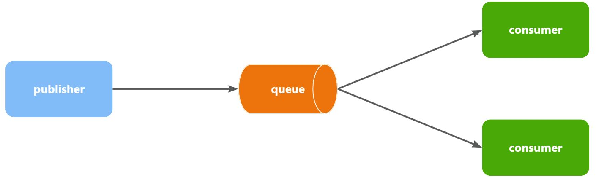
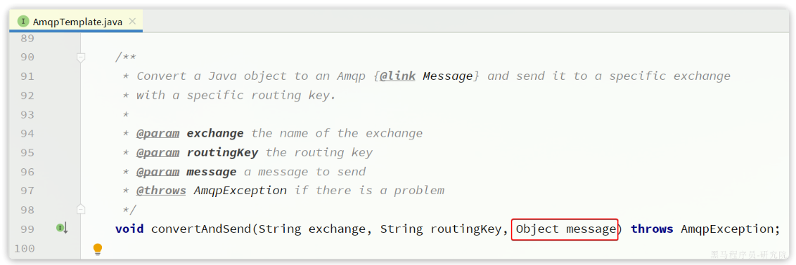
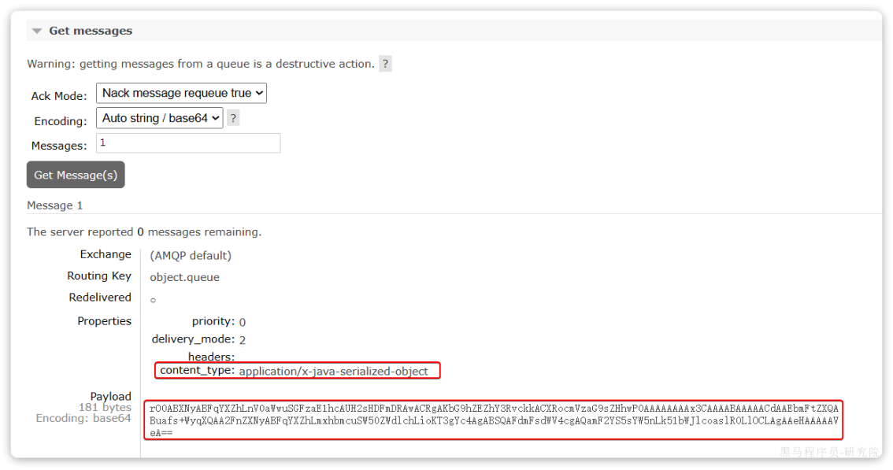
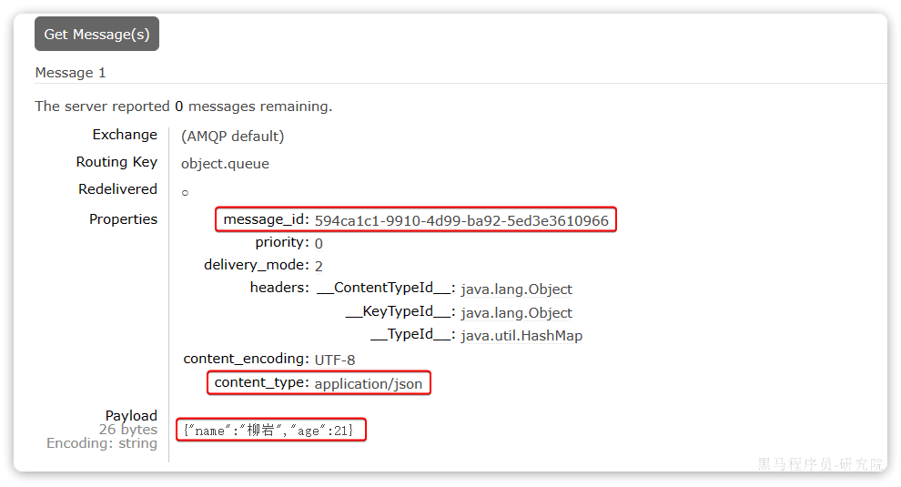

一. SpringAMQP
Spring AMQP 是 Spring 官方提供的一个用于简化 AMQP（高级消息队列协议）开发的框架。
1. 三大核心
1. 消息发送工具：RabbitTemplate
类似于操作 Redis 的 RedisTemplate，Spring 提供了 RabbitTemplate。有了它，不需要关心底层是怎么跟 RabbitMQ 建立网络连接的，只需要一行代码就能把消息发出去。
- 作用： 充当 Producer（生产者）。
- 示例：
rabbitTemplate.convertAndSend("交换机名", "路由键", "你的消息内容");
2. 消息接收注解：@RabbitListener
这是 Spring AMQP 最爽的功能。你完全不需要写死循环去监听队列，只需要在某个方法上打上这个注解，一旦 RabbitMQ 相应的队列里有了消息，Spring 就会自动触发这个方法，把消息内容当作参数传给你。
- 作用： 充当 Consumer（消费者）。
- 示例：
@RabbitListener(queues = "短信队列")
public void receiveMessage(String msg) {
System.out.println("收到需要发短信的指令：" + msg);
}
3. 自动化声明接口：AmqpAdmin
Exchange（交换机）和 Queue（队列），正常情况下需要在网页控制台里手动创建它们并绑定。有了 AmqpAdmin，可以直接在 Java 代码里定义好这些结构，Spring Boot 启动时会自动帮你去 RabbitMQ 里把这些交换机和队列创建好。
2. 配置
依赖
<dependency>
<groupId>org.springframework.boot</groupId>
<artifactId>spring-boot-starter-amqp</artifactId>
</dependency>
application.yml配置
spring:
rabbitmq:
# ==================== 连接配置 ====================
host: 192.168.146.130 # RabbitMQ 服务器 IP
port: 5672 # 通信端口
username: admin # 登录账号
password: admin # 登录密码
virtual-host: / # 虚拟主机
connection-timeout: 1s # 连接超时时间
# ==================== 生产者确认机制 ====================
publisher-confirm-type: correlated # 开启 Publisher Confirm（异步回调模式）
publisher-returns: true # 开启 Publisher Return（路由失败退回）
# ==================== 生产者重试机制 ====================
template:
retry:
enabled: true # 开启发送超时重试
initial-interval: 1000ms # 初始重试间隔
multiplier: 1 # 间隔倍数
max-attempts: 3 # 最大重试次数
# ==================== 消费者配置 ====================
listener:
simple:
prefetch: 1 # 每次只取1条消息，能者多劳
acknowledge-mode: auto # 自动确认（正常→ack，业务异常→nack，格式异常→reject）
retry:
enabled: true # 开启消费者本地重试（不会无限requeue）
initial-interval: 1000ms #第一次重试间隔1秒
max-attempts: 3 # 最多重试3次
max-interval: 10000ms # 最大重试间隔
3. WorkQueues模型
Work queues，任务模型。简单来说就是让多个消费者绑定到一个队列，共同消费队列中的消息。

当消息处理比较耗时的时候，可能生产消息的速度会远远大于消息的消费速度。长此以往，消息就会堆积越来越多，无法及时处理。
此时就可以使用work 模型，多个消费者共同处理消息处理，消息处理的速度就能大大提高了。
接下来，我们就来模拟这样的场景。我们在控制台创建一个新的队列，命名为work.queue：
1. 消息发送
这次我们循环发送，模拟大量消息堆积现象。
在publisher服务中的SpringAmqpTest类中添加一个测试方法：
//向队列中不停发送消息，模拟消息堆积。
@Test
void Testwork() throws InterruptedException {
String queue="work.queue";
for(int i=1;i<=50;i++){
String msg="hello work message______________"+i;
rabbitTemplate.convertAndSend(queue,msg);
Thread.sleep(20);
}
}
2. 消息接收
要模拟多个消费者绑定同一个队列，我们在consumer服务的SpringRabbitListener中添加2个新的方法：
@RabbitListener(queues = "work.queue")
public void listenWorkQueue1(String msg) throws InterruptedException {
System.out.println("消费者1接收到消息：【" + msg + "】" + LocalTime.now());
Thread.sleep(20);
}
@RabbitListener(queues = "work.queue")
public void listenWorkQueue2(String msg) throws InterruptedException {
System.err.println("消费者2........接收到消息：【" + msg + "】" + LocalTime.now());
Thread.sleep(200);
}
注意到这两消费者，都设置了Thead.sleep，模拟任务耗时：
- 消费者1 sleep了20毫秒，相当于每秒钟处理50个消息
- 消费者2 sleep了200毫秒，相当于每秒处理5个消息
3. 测试
启动ConsumerApplication后，在执行publisher服务中刚刚编写的发送测试方法testwork。
最终结果如下：
消费者1接收到消息：【hello, message_0】21:06:00.869555300
消费者2........接收到消息：【hello, message_1】21:06:00.884518
消费者1接收到消息：【hello, message_2】21:06:00.907454400
消费者1接收到消息：【hello, message_4】21:06:00.953332100
消费者1接收到消息：【hello, message_6】21:06:00.997867300
消费者1接收到消息：【hello, message_8】21:06:01.042178700
消费者2........接收到消息：【hello, message_3】21:06:01.086478800
消费者1接收到消息：【hello, message_10】21:06:01.087476600
消费者1接收到消息：【hello, message_12】21:06:01.132578300
消费者1接收到消息：【hello, message_14】21:06:01.175851200
消费者1接收到消息：【hello, message_16】21:06:01.218533400
消费者1接收到消息：【hello, message_18】21:06:01.261322900
消费者2........接收到消息：【hello, message_5】21:06:01.287003700
消费者1接收到消息：【hello, message_20】21:06:01.304412400
消费者1接收到消息：【hello, message_22】21:06:01.349950100
消费者1接收到消息：【hello, message_24】21:06:01.394533900
消费者1接收到消息：【hello, message_26】21:06:01.439876500
消费者1接收到消息：【hello, message_28】21:06:01.482937800
消费者2........接收到消息：【hello, message_7】21:06:01.488977100
消费者1接收到消息：【hello, message_30】21:06:01.526409300
消费者1接收到消息：【hello, message_32】21:06:01.572148
消费者1接收到消息：【hello, message_34】21:06:01.618264800
消费者1接收到消息：【hello, message_36】21:06:01.660780600
消费者2........接收到消息：【hello, message_9】21:06:01.689189300
消费者1接收到消息：【hello, message_38】21:06:01.705261
消费者1接收到消息：【hello, message_40】21:06:01.746927300
消费者1接收到消息：【hello, message_42】21:06:01.789835
消费者1接收到消息：【hello, message_44】21:06:01.834393100
消费者1接收到消息：【hello, message_46】21:06:01.875312100
消费者2........接收到消息：【hello, message_11】21:06:01.889969500
消费者1接收到消息：【hello, message_48】21:06:01.920702500
消费者2........接收到消息：【hello, message_13】21:06:02.090725900
消费者2........接收到消息：【hello, message_15】21:06:02.293060600
消费者2........接收到消息：【hello, message_17】21:06:02.493748
消费者2........接收到消息：【hello, message_19】21:06:02.696635100
消费者2........接收到消息：【hello, message_21】21:06:02.896809700
消费者2........接收到消息：【hello, message_23】21:06:03.099533400
消费者2........接收到消息：【hello, message_25】21:06:03.301446400
消费者2........接收到消息：【hello, message_27】21:06:03.504999100
消费者2........接收到消息：【hello, message_29】21:06:03.705702500
消费者2........接收到消息：【hello, message_31】21:06:03.906601200
消费者2........接收到消息：【hello, message_33】21:06:04.108118500
消费者2........接收到消息：【hello, message_35】21:06:04.308945400
消费者2........接收到消息：【hello, message_37】21:06:04.511547700
消费者2........接收到消息：【hello, message_39】21:06:04.714038400
消费者2........接收到消息：【hello, message_41】21:06:04.916192700
消费者2........接收到消息：【hello, message_43】21:06:05.116286400
消费者2........接收到消息：【hello, message_45】21:06:05.318055100
消费者2........接收到消息：【hello, message_47】21:06:05.520656400
消费者2........接收到消息：【hello, message_49】21:06:05.723106700
可以看到消费者1和消费者2竟然每人消费了25条消息：
- 消费者1很快完成了自己的25条消息
- 消费者2却在缓慢的处理自己的25条消息。
也就是说消息是平均分配给每个消费者，并没有考虑到消费者的处理能力。导致1个消费者空闲，另一个消费者忙的不可开交。没有充分利用每一个消费者的能力，最终消息处理的耗时远远超过了1秒。这样显然是有问题的。
4. 能者多劳
在spring中有一个简单的配置，可以解决这个问题。我们修改consumer服务的application.yml文件，添加配置：
spring:
rabbitmq:
listener:
simple:
prefetch: 1 # 每次只能获取一条消息，处理完成才能获取下一个消息
再次测试，发现结果如下：
消费者1接收到消息：【hello, message_0】21:12:51.659664200
消费者2........接收到消息：【hello, message_1】21:12:51.680610
消费者1接收到消息：【hello, message_2】21:12:51.703625
消费者1接收到消息：【hello, message_3】21:12:51.724330100
消费者1接收到消息：【hello, message_4】21:12:51.746651100
消费者1接收到消息：【hello, message_5】21:12:51.768401400
消费者1接收到消息：【hello, message_6】21:12:51.790511400
消费者1接收到消息：【hello, message_7】21:12:51.812559800
消费者1接收到消息：【hello, message_8】21:12:51.834500600
消费者1接收到消息：【hello, message_9】21:12:51.857438800
消费者1接收到消息：【hello, message_10】21:12:51.880379600
消费者2........接收到消息：【hello, message_11】21:12:51.899327100
消费者1接收到消息：【hello, message_12】21:12:51.922828400
消费者1接收到消息：【hello, message_13】21:12:51.945617400
消费者1接收到消息：【hello, message_14】21:12:51.968942500
消费者1接收到消息：【hello, message_15】21:12:51.992215400
消费者1接收到消息：【hello, message_16】21:12:52.013325600
消费者1接收到消息：【hello, message_17】21:12:52.035687100
消费者1接收到消息：【hello, message_18】21:12:52.058188
消费者1接收到消息：【hello, message_19】21:12:52.081208400
消费者2........接收到消息：【hello, message_20】21:12:52.103406200
消费者1接收到消息：【hello, message_21】21:12:52.123827300
消费者1接收到消息：【hello, message_22】21:12:52.146165100
消费者1接收到消息：【hello, message_23】21:12:52.168828300
消费者1接收到消息：【hello, message_24】21:12:52.191769500
消费者1接收到消息：【hello, message_25】21:12:52.214839100
消费者1接收到消息：【hello, message_26】21:12:52.238998700
消费者1接收到消息：【hello, message_27】21:12:52.259772600
消费者1接收到消息：【hello, message_28】21:12:52.284131800
消费者2........接收到消息：【hello, message_29】21:12:52.306190600
消费者1接收到消息：【hello, message_30】21:12:52.325315800
消费者1接收到消息：【hello, message_31】21:12:52.347012500
消费者1接收到消息：【hello, message_32】21:12:52.368508600
消费者1接收到消息：【hello, message_33】21:12:52.391785100
消费者1接收到消息：【hello, message_34】21:12:52.416383800
消费者1接收到消息：【hello, message_35】21:12:52.439019
消费者1接收到消息：【hello, message_36】21:12:52.461733900
消费者1接收到消息：【hello, message_37】21:12:52.485990
消费者1接收到消息：【hello, message_38】21:12:52.509219900
消费者2........接收到消息：【hello, message_39】21:12:52.523683400
消费者1接收到消息：【hello, message_40】21:12:52.547412100
消费者1接收到消息：【hello, message_41】21:12:52.571191800
消费者1接收到消息：【hello, message_42】21:12:52.593024600
消费者1接收到消息：【hello, message_43】21:12:52.616731800
消费者1接收到消息：【hello, message_44】21:12:52.640317
消费者1接收到消息：【hello, message_45】21:12:52.663111100
消费者1接收到消息：【hello, message_46】21:12:52.686727
消费者1接收到消息：【hello, message_47】21:12:52.709266500
消费者2........接收到消息：【hello, message_48】21:12:52.725884900
消费者1接收到消息：【hello, message_49】21:12:52.746299900
可以发现，由于消费者1处理速度较快，所以处理了更多的消息；消费者2处理速度较慢，只处理了6条消息。而最终总的执行耗时也在1秒左右，大大提升。
正所谓能者多劳，这样充分利用了每一个消费者的处理能力，可以有效避免消息积压问题。
4. 交换机类型
Exchange（交换机）只负责转发消息，不具备存储消息的能力，因此如果没有任何队列与Exchange绑定，或者没有符合路由规则的队列，那么消息会丢失！
交换机的类型有四种：
1. Direct Exchange（直连交换机）
这是最简单、最直接的路由方式。
- 路由规则： 精确匹配。消息的
Routing Key（路由键）必须与队列绑定到交换机时指定的Binding Key（绑定键）完全相同。 - 适用场景： 点对点（Unicast）的消息传递。例如，系统中有多个日志队列，明确要求将
error级别的日志发到错误日志队列，将info级别的发到信息日志队列。
2. Fanout Exchange（扇形/广播交换机）
这种交换机的处理速度是最快的，因为它不需要进行任何路由键的匹配计算。
- 路由规则： 无视路由键，直接广播。它会将收到的所有消息，路由到所有与该交换机绑定的队列中。
- 适用场景： 广播消息（Broadcast）。例如，一个后台管理系统更新了配置，需要通知所有微服务节点重新加载配置，就可以使用 Fanout 交换机将更新指令广播给所有节点的队列。
3. Topic Exchange（主题交换机）
这是最灵活、最强大的路由方式，也是企业级开发中最常用的交换机。
- 路由规则： 模糊匹配。它允许队列在绑定时使用通配符，消息的路由键按单词（单词之间以
.分割）进行匹配。 - 通配符规则 -
\*(星号)： 精确匹配一个单词。 - 通配符规则 -
#(井号)： 匹配零个或多个单词。 - 适用场景： 复杂的发布/订阅模式（Multicast）。例如，路由键设计为
业务类别.操作.状态（如order.create.success），不同的消费者可以通过类似order.*.success或*.create.#来灵活地按需订阅自己关心的消息。
4. Headers Exchange（头交换机）
这种交换机在实际开发中使用频率较低。
- 路由规则： 不依赖
Routing Key，而是根据发送消息内容中的Headers属性进行匹配。队列绑定时可以指定是要求所有 Header 属性全匹配（x-match=all）还是只要匹配其中一个即可（x-match=any）。 - 适用场景： 路由规则异常复杂，且难以用简单的字符串（路由键）表达，必须依赖消息的多个元数据属性进行组合判断的特殊场景。
总结对比
| 交换机类型 | 路由方式 | 匹配规则 | 典型应用场景 |
|---|---|---|---|
| Direct | 点对点 | Routing Key 完全精确匹配 | 指定任务定向分发 |
| Fanout | 广播 | 无视 Routing Key，全量分发给所有绑定队列 | 全局状态同步、群发通知 |
| Topic | 组播/订阅 | Routing Key 通配符模糊匹配 | 按业务模块和行为灵活订阅 |
| Headers | 基于元数据 | 匹配 Header 键值对属性 | 依赖复杂 Header 属性的分发 |
5. Direct Exchange
工作原理： 消息的路由键（Routing Key）必须与队列绑定的键（Binding Key）完全匹配。这是一种点对点的精确路由。
配置代码
我们需要声明交换机、队列，并将它们通过一个确定的 Routing Key 绑定起来。
@Configuration
public class DirectRabbitConfig {
// 1. 声明 Direct 交换机
@Bean
public DirectExchange directExchange() {
return new DirectExchange("my.direct.exchange");
}
// 2. 声明队列
@Bean
public Queue directQueue() {
return new Queue("my.direct.queue");
}
// 3. 将队列绑定到交换机，并指定 Routing Key 为 "info.routing.key"
@Bean
public Binding bindingDirect() {
return BindingBuilder.bind(directQueue()).to(directExchange()).with("info.routing.key");
}
}
发送与接收代码
// 生产者发送消息：Routing Key 必须严格等于 "info.routing.key"
rabbitTemplate.convertAndSend("my.direct.exchange", "info.routing.key", "这是一条Direct消息");
// 消费者监听队列
@RabbitListener(queues = "my.direct.queue")
public void receiveDirect(String message) {
System.out.println("收到 Direct 消息: " + message);
}
6. Fanout Exchange
工作原理： 它会忽略 Routing Key，直接把接收到的消息广播到所有与它绑定的队列中。速度最快，适合做全局广播（例如配置更新、系统通知）。
配置代码
@Configuration
public class FanoutRabbitConfig {
// 1. 声明 Fanout 交换机
@Bean
public FanoutExchange fanoutExchange() {
return new FanoutExchange("my.fanout.exchange");
}
// 2. 声明两个不同的队列
@Bean
public Queue fanoutQueueA() {
return new Queue("my.fanout.queue.A");
}
@Bean
public Queue fanoutQueueB() {
return new Queue("my.fanout.queue.B");
}
// 3. 将队列绑定到交换机（不需要指定 Routing Key）
@Bean
public Binding bindingFanoutA() {
return BindingBuilder.bind(fanoutQueueA()).to(fanoutExchange());
}
@Bean
public Binding bindingFanoutB() {
return BindingBuilder.bind(fanoutQueueB()).to(fanoutExchange());
}
}
发送与接收代码
// 生产者发送消息：Routing Key 留空字符串即可，因为 Fanout 根本不看它
rabbitTemplate.convertAndSend("my.fanout.exchange", "", "这是一条全局广播消息");
// 消费者 A 监听队列 A
@RabbitListener(queues = "my.fanout.queue.A")
public void receiveFanoutA(String message) {
System.out.println("系统A收到广播: " + message);
}
// 消费者 B 监听队列 B
@RabbitListener(queues = "my.fanout.queue.B")
public void receiveFanoutB(String message) {
System.out.println("系统B收到广播: " + message);
}
7. Topic Exchange
Topic（主题）交换机是 RabbitMQ 中最灵活的交换机。它既可以做到像 Direct 那样的精准匹配，也可以利用通配符进行模糊（模式）匹配，甚至还能模拟 Fanout 的全局广播
工作原理： 基于 Routing Key 的模式匹配来进行路由。Routing Key 必须是一串由点（.）隔开的单词（如 log.error.db）。
支持两种通配符：
*（星号）：匹配恰好一个单词。#（井号）：匹配零个或多个单词。
配置代码
@Configuration
public class TopicRabbitConfig {
// 1. 声明 Topic 交换机
@Bean
public TopicExchange topicExchange() {
return new TopicExchange("my.topic.exchange");
}
// 2. 声明队列
@Bean
public Queue topicQueueError() {
return new Queue("my.topic.queue.error"); // 只关心 error 级别的日志
}
@Bean
public Queue topicQueueAll() {
return new Queue("my.topic.queue.all"); // 关心所有日志
}
// 3. 绑定队列
// 队列一：只匹配 "log.error.xxx"，星号代表仅匹配一层
@Bean
public Binding bindingTopicError() {
return BindingBuilder.bind(topicQueueError()).to(topicExchange()).with("log.error.*");
}
// 队列二：匹配所有以 "log." 开头的消息，井号代表匹配多层
@Bean
public Binding bindingTopicAll() {
return BindingBuilder.bind(topicQueueAll()).to(topicExchange()).with("log.#");
}
}
发送与接收代码
// 场景 1: 发送一个匹配两个队列的消息
// 路由键为 "log.error.database"
// -> "log.error.*" 匹配成功 (error后刚好跟了一个database)
// -> "log.#" 匹配成功 (log后跟了任意数量的词)
rabbitTemplate.convertAndSend("my.topic.exchange", "log.error.database", "数据库崩溃了！");
// 结果：topicQueueError 和 topicQueueAll 都会收到这条消息。
// 场景 2: 发送只匹配一个队列的消息
// 路由键为 "log.info.system"
// -> "log.error.*" 匹配失败
// -> "log.#" 匹配成功
rabbitTemplate.convertAndSend("my.topic.exchange", "log.info.system", "系统正常启动");
// 结果：只有 topicQueueAll 会收到这条消息。
8. 声明队列和交换机
在之前我们都是基于RabbitMQ控制台来创建队列、交换机。但是在实际开发时，队列和交换机是程序员定义的，将来项目上线，又要交给运维去创建。那么程序员就需要把程序中运行的所有队列和交换机都写下来，交给运维。在这个过程中是很容易出现错误的。
因此推荐的做法是由程序启动时检查队列和交换机是否存在，如果不存在自动创建。
1. RabbitMQConfig
@Configuration
public class RabbitMQConfig {
// ==================== 1. Fanout 交换机配置 ====================
@Bean
public FanoutExchange fanoutExchange() {
return new FanoutExchange("fanout.exchange");
}
@Bean
public Queue fanoutQueue() {
return new Queue("fanout.queue");
}
@Bean
public Binding bindFanout(Queue fanoutQueue, FanoutExchange fanoutExchange) {
return BindingBuilder.bind(fanoutQueue).to(fanoutExchange);
}
// ==================== 2. Direct 交换机配置 ====================
@Bean
public DirectExchange directExchange() {
return new DirectExchange("direct.exchange");
}
@Bean
public Queue directQueue() {
return new Queue("direct.queue");
}
@Bean
public Binding bindDirect(Queue directQueue, DirectExchange directExchange) {
return BindingBuilder.bind(directQueue).to(directExchange).with("info");
}
// ==================== 3. Topic 交换机配置 ====================
@Bean
public TopicExchange topicExchange() {
return new TopicExchange("topic.exchange");
}
@Bean
public Queue topicQueue() {
return new Queue("topic.queue");
}
@Bean
public Binding bindTopic(Queue topicQueue, TopicExchange topicExchange) {
return BindingBuilder.bind(topicQueue).to(topicExchange).with("order.#");
}
}
注意 Bean 名称冲突： 当所有配置写在一起时，请务必保证 @Bean 标注的方法名（如 fanoutQueue、directQueue）不要重复，因为 Spring 默认会将方法名作为 Bean 的名称。如果重名，项目启动时会报错。
2. 基于注解声明
在 Spring Boot 项目中，基于注解来声明队列和交换机是最为简洁、也是日常后端开发中最讨喜的方式。它最大的优势在于“所见即所得”：你把监听逻辑、队列创建、交换机创建以及绑定关系，全部浓缩在了消费者方法的一个注解里。
核心依赖是 @RabbitListener 结合 @QueueBinding。
注解的创建逻辑是在消费者服务启动并初始化 Listener 容器时才触发的。
- 潜在风险：如果生产者先发送了消息，而消费者服务尚未启动（队列和绑定关系尚未被注解创建），消息发送到 Exchange 后会因无匹配 Queue 而被直接丢弃。
- 建议：核心业务的交换机和队列，建议在生产者端或统一配置类中通过
@Bean显式预先声明，确保发送前基础设施已就绪。
1. Direct Exchange（直连交换机）注解声明
对于 Direct 模式，需要精确指定 key（路由键）。建议使用 Spring 提供的 ExchangeTypes.DIRECT 常量来避免拼写错误。
public class DirectAnnotationListener {
@RabbitListener(bindings = @QueueBinding(
value = @Queue(name = "direct.annotation.queue"), // 1. 声明队列
exchange = @Exchange(name = "direct.annotation.exchange", type = ExchangeTypes.DIRECT), // 2. 声明交换机
key = {"info", "error"} // 3. 声明绑定关系（可以绑定多个路由键）
))
public void listenDirectQueue(String msg) {
log.info("接收到 Direct 消息: {}", msg);
}
}
2. Fanout Exchange（广播交换机）注解声明
Fanout 模式是广播，不需要路由键。因此在 @QueueBinding 中省略 key 属性即可。
public class FanoutAnnotationListener {
@RabbitListener(bindings = @QueueBinding(
value = @Queue(name = "fanout.annotation.queue1"),
exchange = @Exchange(name = "fanout.annotation.exchange", type = ExchangeTypes.FANOUT)
// 注意：Fanout 交换机不需要配置 key
))
public void listenFanoutQueue1(String msg) {
log.info("消费者 1 接收到 Fanout 广播消息: {}", msg);
}
// 模拟第二个消费者绑定到同一个广播交换机
@RabbitListener(bindings = @QueueBinding(
value = @Queue(name = "fanout.annotation.queue2"),
exchange = @Exchange(name = "fanout.annotation.exchange", type = ExchangeTypes.FANOUT)
))
public void listenFanoutQueue2(String msg) {
log.info("消费者 2 接收到 Fanout 广播消息: {}", msg);
}
}
3. Topic Exchange（主题交换机）注解声明
Topic 模式与 Direct 类似，只是 key 可以使用通配符（# 和 *）。
public class TopicAnnotationListener {
@RabbitListener(bindings = @QueueBinding(
value = @Queue(name = "topic.annotation.queue"),
exchange = @Exchange(name = "topic.annotation.exchange", type = ExchangeTypes.TOPIC),
key = "order.#" // 接收 order. 开头的所有消息，如 order.create.success
))
public void listenTopicQueue(String msg) {
log.info("接收到 Topic 主题消息: {}", msg);
}
}
9. 消息转换器
Spring的消息发送代码接收的消息体是一个Object：

而在数据传输时，它会把你发送的消息序列化为字节发送给MQ，接收消息的时候，还会把字节反序列化为Java对象。
只不过，默认情况下Spring采用的序列化方式是JDK序列化。众所周知，JDK序列化存在下列问题：
- 数据体积过大
- 有安全漏洞
- 可读性差
我们来测试一下。
1. 测试默认转换器
1）创建测试队列
首先，我们在consumer服务中声明一个新的配置类：
利用@Bean的方式创建一个队列,具体代码：
package com.itheima.consumer.config;
import org.springframework.amqp.core.Queue;
import org.springframework.context.annotation.Bean;
import org.springframework.context.annotation.Configuration;
@Configuration
public class MessageConfig {
@Bean
public Queue objectQueue() {
return new Queue("object.queue");
}
}
注意，这里我们先不要给这个队列添加消费者，我们要查看消息体的格式。重启consumer服务以后，该队列就会被自动创建出来了：
2）发送消息
我们在publisher模块的SpringAmqpTest中新增一个消息发送的代码，发送一个Map对象：
@Test
public void testSendMap() throws InterruptedException {
// 准备消息
Map<String,Object> msg = new HashMap<>();
msg.put("name", "柳岩");
msg.put("age", 21);
// 发送消息
rabbitTemplate.convertAndSend("object.queue", msg);
}
发送消息后查看控制台：

可以看到消息格式非常不友好。
2. 配置JSON转换器
显然，JDK序列化方式并不合适。我们希望消息体的体积更小、可读性更高，因此可以使用JSON方式来做序列化和反序列化。
在publisher和consumer两个服务中都引入依赖：
<dependency>
<groupId>com.fasterxml.jackson.dataformat</groupId>
<artifactId>jackson-dataformat-xml</artifactId>
<version>2.9.10</version>
</dependency>
注意，如果项目中引入了spring-boot-starter-web依赖，则无需再次引入Jackson依赖。
可以直接在刚才的RabbitMQConfig里面加入JSON 消息转换器就行
@Configuration
public class RabbitMQConfig {
// 配置全局的 JSON 消息转换器
@Bean
public MessageConverter jsonMessageConverter() {
return new Jackson2JsonMessageConverter();
}
// 下面可以继续写您的 Queue, Exchange, Binding 等配置...
}
此时，我们到MQ控制台删除object.queue中的旧的消息。然后再次执行刚才的消息发送的代码，到MQ的控制台查看消息结构：

3. 消费者接收Object
我们在consumer服务中定义一个新的消费者，publisher是用Map发送，那么消费者也一定要用Map接收，格式如下：
@RabbitListener(queues = "object.queue")
public void listenSimpleQueueMessage(Map<String, Object> msg) throws InterruptedException {
System.out.println("消费者接收到object.queue消息：【" + msg + "】");
}
二. 业务示例
“余额支付成功后通知其他服务（交易、积分、短信）”为例，用 Spring AMQP 的注解方式（@RabbitListener + @QueueBinding）写一个具体的业务代码逻辑
这里我们采用企业中最常用的 Topic Exchange（主题交换机）。
1. 生产者：支付服务
支付服务在扣减余额、更新自己的流水单后，不需要再同步调用其他服务，而是直接向 RabbitMQ 发送一条“支付成功”的消息。
@Service
@Slf4j
public class PaymentService {
@Autowired
private RabbitTemplate rabbitTemplate;
public void pay(String orderId, Long userId) {
// 1. 执行本地业务：扣减余额，更新支付流水状态为“已支付”
log.info("用户 {} 订单 {} 扣款成功，更新流水状态完成。", userId, orderId);
// 2. 异步通知：向交换机发送支付成功的消息
String exchangeName = "pay.topic.exchange";
// 路由键设计为 "pay.success"
String routingKey = "pay.success";
// 发送的内容可以是订单号，实际业务中通常是一个包含详细信息的 JSON / 对象
rabbitTemplate.convertAndSend(exchangeName, routingKey, orderId);
log.info("已发送支付成功消息到 MQ，业务直接返回。");
}
}
2. 消费者：其他微服务
笔记中提到基于注解声明是最简洁的。其他服务只需要通过 @RabbitListener 监听自己专属的队列，并绑定到上面的交换机即可。一旦有消息，它们会自动触发执行。
交易服务（更新订单状态）
@Component
@Slf4j
public class OrderServiceListener {
@RabbitListener(bindings = @QueueBinding(
value = @Queue(name = "order.pay.queue"), // 交易服务专属队列
exchange = @Exchange(name = "pay.topic.exchange", type = ExchangeTypes.TOPIC),
key = "pay.success" // 只关心支付成功的消息
))
public void listenPaySuccess(String orderId) {
log.info("交易服务接收到消息，开始将订单 {} 的状态更新为【已支付】...", orderId);
// 执行更新订单状态逻辑
}
}
积分服务（增加用户积分）
@Component
@Slf4j
public class PointsServiceListener {
@RabbitListener(bindings = @QueueBinding(
value = @Queue(name = "points.pay.queue"), // 积分服务专属队列
exchange = @Exchange(name = "pay.topic.exchange", type = ExchangeTypes.TOPIC),
key = "pay.*" // 使用通配符，只要是 pay 开头的消息都处理（比如成功、退款等）
))
public void listenPayMessage(String orderId) {
log.info("积分服务接收到消息，开始为订单 {} 的关联用户增加积分...", orderId);
// 执行增加积分逻辑
}
}
短信服务（发送通知）
@Component
@Slf4j
public class SmsServiceListener {
@RabbitListener(bindings = @QueueBinding(
value = @Queue(name = "sms.pay.queue"), // 短信服务专属队列
exchange = @Exchange(name = "pay.topic.exchange", type = ExchangeTypes.TOPIC),
key = "pay.success"
))
public void listenPaySuccess(String orderId) {
log.info("短信服务接收到消息，开始向订单 {} 的用户发送【支付成功短信】...", orderId);
// 执行发送短信逻辑
}
}
- 性能提升：支付服务发完消息就直接给用户返回成功了（耗时可能只有几十毫秒），不需要死等交易、积分、短信这三个服务全执行完。
- 拓展性强：后续如果产品经理要求再加一个“发优惠券”功能，支付服务的代码一行都不用改，只需要在优惠券服务里再写一个
@RabbitListener监听同一个交换机就行。 - 隔离级联失败：如果短信服务宕机了，只影响发短信，绝对不会导致用户的钱被退回去（支付事务不会回滚）。